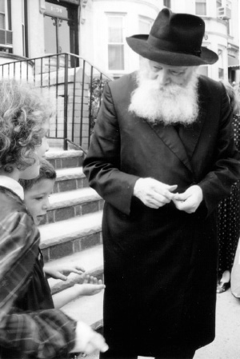

My Rebbe
In honor of Yud-Alef Nissan, the birthday of the Nasi Ha’dor, our reporter collected personal accounts and stories, big and small, from people who feel that the Rebbe cares for them.

It’s true. Because each of us feels that the Rebbe is only ours.
Rocheli Blau Hanoka: I was asked to come to a farbrengen in Netanya and to speak on the topic of hiskashrus to the Rebbe. I planned on preparing properly, but I did not manage to do much. The farbrengen was planned for Yud-Tes Kislev afternoon and that day (as well as the days prior to it) I was busy from morning till night.
I knew that I could fill ten minutes and even that was just “perhaps.” I would expand a bit on the HaYom Yom for 24 Sivan and tell an unfamiliar story about Yud-Tes Kislev. But the organizers expected something a bit more substantial and lengthy.
Before I left for the farbrengen, I stood near a picture of the Rebbe and said to him: Put the words in my mouth. I don’t know what to say and I did as much as I could do. I am preparing myself to be nothing more than a channel.
At the farbrengen there was a large picture of the Rebbe wearing tallis and t’fillin. I looked at it and asked, in my heart, once again. And I began speaking.
I walked in at 3:18 and left at 4:30 and I could have continued speaking…
Batya Lombroso: One Tishrei, before we returned to Eretz Yisroel, my sister and I weighed our suitcases. They were significantly overweight. We did not have money and my sister suggested that we borrow money so we could pay at the airport.
I told her that she could borrow if she wanted but I would not borrow money. I was coming from the Rebbe and I was sure that I wouldn’t have a problem.
We went to the airport without an extra cent. When it was our turn, the clerk wanted to put the suitcase on the belt. I put the suitcase down as it was, without being nervous about it. The Rebbe was with me, right?
I put down the suitcase as I murmured “Yechi.” The clerk attached a ticket to the suitcase with looking at the weight and said I could move on.
On my right and left, clerks were telling girls to take down their suitcases because of four extra kilos and my sister and I, with more than ten kilos, went through with the Rebbe without any problem.
Avital Borstein: It was a very difficult period. My mother had passed away a few months before and the hardship was overwhelming. At the same time, together with Kollel Chabad, I had come up with an idea for a small homey organization for high school and seminary girls going through similar challenges.
Before the first activity that we did it was very stressful (because the issue was very sensitive). At a certain point, a friend whom I had relied on to help me, told me that she was backing out. I felt that the difficulties were unbearable and I wondered whether what I was doing was the right thing.
That day, I came across a video excerpt in which the Rebbe stood, spoke, and cried.
The Rebbe’s voice, his tears, along with the words, struck me deeply: “We wish to have ‘emuna p’shuta,’ that ‘I will thank you Hashem for You were wroth with me!’” With hot tears, crying out, pleading.
I felt that the Rebbe cried then, when he said this sicha, for this moment, for the moment in which I was experiencing this terrible test, with tremendous hardship, at the brink of something revolutionary but on the verge of despair.
I felt how the Rebbe understood me! And yet, was crying and pleading, “Carry on!”
There were other people watching the video with me but I felt that the Rebbe was speaking to me and for me. I felt that it was only me and him. My Rebbe.
And I carried on, with the Rebbe’s words constantly reverberating.
“We desire to have emuna p’shuta that I will thank you Hashem for You were wroth with me!”
Oriya Mavry: We became baalei t’shuva twelve years ago. We lived on a yishuv and our financial situation was bleak. My father was fired and my mother’s salary did not cover all our expenses.
Since we hadn’t paid the rent, the landlord demanded that we leave so his son could move in. In order to make this happen quickly, he cut off the electricity and water.
Boruch Hashem, we managed thanks to the rebbetzin of the yishuv. She would bring us pails of water and bottles of frozen water so we could keep dairy products in a cooler.
My parents spent a year looking for another apartment to rent, but each time when it came time to sign a lease, somehow the arrangement would fall through.
One day, my mother came across an ad in Yediot HaKfar about a bracha from the Rebbe. She called the number in the ad. A man answered and asked her to call back later or to send a request in the mail since the woman who took care of this was not available at the time. In the end, my mother decided to leave her address and phone number and asked that someone get back to her.
When her call was returned, it was a nice girl who asked my mother what she needed. My mother said, “A bracha from the Rebbe.”
The girl wrote a letter to the Rebbe and after putting it into a volume of Igros Kodesh; she read the page and happily reported, “You have a bracha for an apartment. The Rebbe gives a bracha for laying the cornerstone.”
My mother did not quite understand how it was possible for her to lay a cornerstone when we were being threatened with immediate eviction.
This all happened on a Thursday. On Motzaei Shabbos, the representative of some non-profit organization called and offered his friend’s apartment to my mother. We were not familiar with that yishuv and had not seen the apartment, but it all happened very quickly. My father went to the new yishuv, registered as a resident, and the moment he came back they began loading the contents of the old house into a big vehicle.
It took a bit of time until we actually moved because it was an apartment that had been closed for many years and it needed to be connected to the electricity and water and a few other things had to be done. During those three weeks, we stayed with my grandparents.
Until today, we have tremendous bracha in this apartment in the merit of the Rebbe’s bracha.
Ohr Rochel Inspektor: I’ve traveled a lot, always with a picture of the Rebbe in my wallet. A policeman once stopped me for a traffic infraction because I hadn’t come to a full stop at the stop sign. It was 10 Teves.
When I handed my registration to the officer who was religious, he noticed the Rebbe’s picture inside the car.
“Are you a Chassida of his?” he asked.
“I try,” I said.
“Fine,” he said as he handed back the papers. “I know him a bit, and I know that he would not want us to ruin the joy of the holiday with tickets and fines. Although this day has not yet been transformed into a holiday and is still a fast day, I won’t ruin it for you. Travel safely.”
Doreen Dadon: “Last year I went to the Rebbe for Tishrei without realizing what this entails. I decided to go with the flow because I really wanted to go to the Rebbe.
I flew with some friends and when we arrived, they arranged a place for us. The apartment was okay but for me, who wasn’t used to being away from a nice, comfortable home, it was very hard.
The next day, I went to 770 where I discovered that I did not understand anything. The entire purpose of my coming to the Rebbe was to understand what a Rebbe is and what Chabad means, and I was frustrated that I had nobody close to me who could guide me.
On the Friday before Rosh HaShana, I began to cry and I wrote to the Rebbe that I had tried, I had come, and the conditions here did not enable me to make any progress.
I asked the Rebbe for two things: that I have a nice place to stay and that I have someone to learn with throughout the month.
I finished writing and left for 770. My feet dragged me there while I felt I had nothing to do there.
When I arrived, I met someone whom I did not know and she asked whether I had a place to stay because she had a place to sleep but her hosts were going away and she did not want to remain alone.
I immediately told her that I was looking for a place with a homey atmosphere and I would be happy to join her.
On the second day of Rosh HaShana I went to 770 and sat down somewhere. Someone told me that the person whose seat it was never came to shul which meant I could sit there through the entire davening in peace. This same person helped me follow the chazan and even davened out loud so I could hear her and know where we were up to.
Thus, my second request was fulfilled, a request for a chavrusa. That girl became my chavrusa for the month. From the moment I wrote my letter, my Tishrei became wonderful, thanks to the Rebbe who looked out for me.
Mushy Lifschitz: One day, I had no strength for anything, not to do and not to work… just an undefined “lousy” feeling.
I wrote to the Rebbe and opened to an amazing answer. The Rebbe wrote that he knows about the weakness of the men or women among the Chassidim, and we need to know that there is a great Rebbe, his father-in-law, who prays for them and thinks of them.
That was just what I needed to see and hear at that time.
Miriam Mussia Borstein: For many years I worked all year so as to be able to go to the Rebbe. But every year, for various reasons, I remained in Eretz Yisroel.
One year, I despaired in advance. I thought the Rebbe wanted me in Eretz Yisroel and that was that, so why bother expending energy on trying to go?
But my Rebbe wanted me with him for Tishrei and I got a ticket for free!
When I arrived, I had no idea where I would be sleeping. But a place was arranged for me with a wonderful family, for the entire month, for free. Every time, at the davening, at the hakafos, at the Simchas Beis HaShoeiva, the second I arrived, I had the best spot I could dream of.
I felt that the Rebbe was looking after me so I would have everything I needed and beyond. He brought me to him and he hosted me in the best possible way.
Beis Moshiach (staff). "My Rebbe." Beis Moshiach, no. 923 (April 9, 2014).